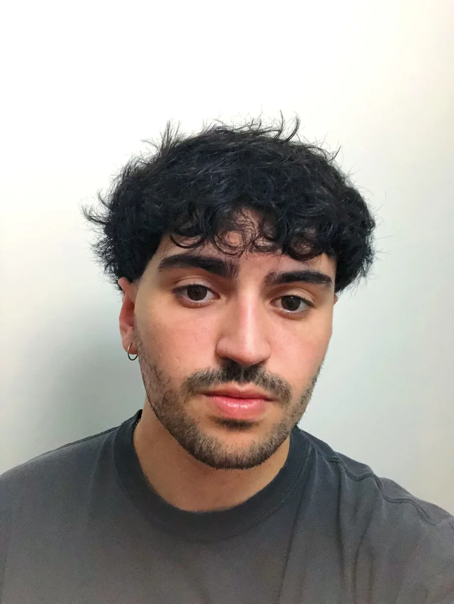

Every project starts with one simple question: what should the person using it feel?Cada proyecto empieza por una pregunta simple: qué tiene que sentir la persona que lo usa.
Selected workTrabajo seleccionado
Sites for studios and artists, and products of my own built with AI. Each one with its own visual language, none made from a template.Sitios para estudios y artistas, y productos propios con IA. Cada uno con su propio lenguaje visual, ninguno hecho con plantilla.
All on GitHubTodo en GitHubAgent Village
AI agents that find businesses without a website, prepare a demo and wait for my approval. A low-poly 3D house with a HUD.Agentes de IA que encuentran negocios sin web, preparan una demo y esperan mi aprobación. Casa 3D low poly con HUD.
Next.js · Agent SDK · Three.jsEstudio B+G
Studio website and project portfolio for an architecture firm in La Plata.Sitio institucional y portfolio de obras para un estudio de arquitectura de La Plata.
Next.js 16 · Tailwind v4Alejandra Filgueira
Bilingual portfolio for an abstract artist.Portfolio bilingüe para una artista de arte abstracto.
Next.js · next-intlCan i 100% it?
One search to find out whether you can still get 100% of a Steam game's achievements.Una sola búsqueda para saber si todavía se puede conseguir el 100% de los logros de un juego de Steam.
Next.js 16 · Gemini · PostgreSQL
Facundo Biagioni · La PlataStudio detail, product judgmentDetalle de estudio, criterio de producto
I'm obsessed with the details almost nobody notices but everyone feels: the weight of a typeface, the rhythm of an animation, a page that loads fast on an old phone.Me obsesionan los detalles que casi nadie nota pero todos sienten: el peso de una tipografía, el ritmo de una animación, que la página cargue rápido en un celular viejo.
Today I pair them with AI agents that search, design and write on their own, and never do anything outward without a person's approval.Hoy los combino con agentes de IA que buscan, diseñan y redactan solos, y que nunca hacen nada hacia afuera sin que una persona lo apruebe.
Download CVDescargar CVWhat I work withCon qué trabajo
- TypeScript
- React
- Next.js
- Tailwind
- Framer Motion
- Three.js
- PostgreSQL
- Claude Agent SDK